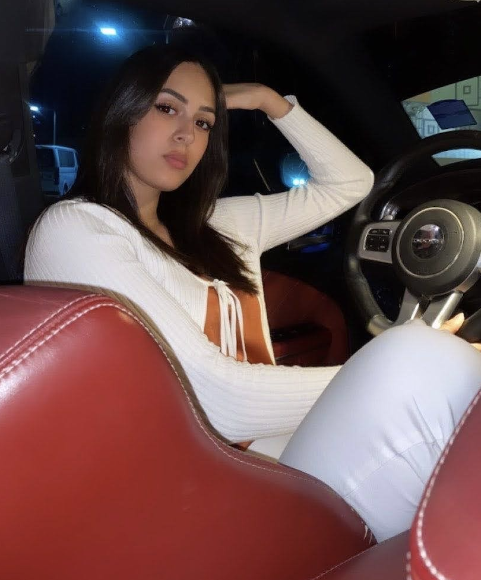
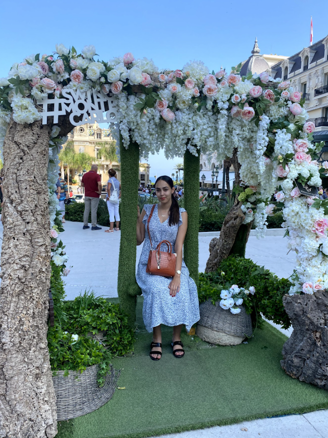

🌍 Welcome to my Life 🌍

Hello Everyone 🙋🏽♀
My name is Myriam, I am 22 years old and I would like to welcome all of you to my world 😊.
📚 Currently a student Master in Operation Management at Kedge Business School, in Bordeaux, I am studying international development, Supply Chain & Purchasing. 📚
💡You can here, learn a little bit more about myself, my hobbies, my experiences and my travels.💡
⬇️ You can also learn more about me in my Linkedin ⬇️
You can follow me on LinkedIn
🧐 Who Am I ? 🧐
💁🏽♀️I am Myriam Chariraa, a young and ambitious woman from a French-Moroccan family, who just wants to become successful. 💁🏽♀️
After a year as an exchange student in USA, I came back to France to study International Trade at Saint Felix. After, two amazing years, I integrated in my third year in a Bachelor in International Development at Audencia Business School. Today, I am proud to be a student at Kedge Business School in Operation Management Master.
If you ask around, people would say that I am a generous, kind, a little bit stubborn, but I am full of joy 🤗.

You can follow me on Instagram
🎼🌍🏀 My Hobbies 🏀🌍🎼
❤️ I am passionate about a lot of things, but If I have to choose a top 3 it will be: Music, Basketball & Traveling. ❤️
🎼 I'm passionate about music, since I am a kid, my parents would make me listen to different styles of music and discovering new artists. Now It’s becoming an hobbies, to listen music. 🎼
⛹🏽♀️ I am also passionate about Basketball, I have been playing since I am 7 years old, and I had the chance to play in my Varsity team in USA ⛹🏽♀️
✈️ 🗺 Travelling, is also a hobbies, I love learning new culture, new language, new habits, food… Travelling, brought me the opportunity to become an open-minded person, and I think this is important to get the chance to know the world and his beauty. 🗺 ✈️

👩🏽💻 My Experience 👩🏽💻
🇺🇸 After graduating my French High School diploma, I had the opportunity to go live a year in Astoria, Oregon in United States of America. I studied English Literature, American History but also Introduction in Business, Accounting, Marketing. 🇺🇸
🇦🇪 Moreover, when I came back to France, I studying two years of international business at Saint Felix la Salle, where I had the opportunity to do a 4-month internship in Dubai. I worked in a Wedding planner platform where I was sales assistant. UAE is a beautiful peoples, where all culture and religion can live united and happy. I loved my times there, where I had the chance to learn a lot about their history, their foods, their population. 🇦🇪
✈️🚢 In my second year of international trade, I did an internship Bollore Logistics. One of the leaders in Import/Export activities, I learned so much with their amazing teams. Bolloré, allowed me to develop my knowledge and skills in logistics but also how stress management. It was a revelation for me, I want to work in logistics in the future. 🚢✈️
☎️ Finally, during the summers 2019 and 2020, I worked at SFR, as a salesperson, I am so happy to worked there, because I could worked on my negotiation skills, but also how to deal with unhappy client, retain them.☎️
✈️🇦🇪 Futhermore, during my internship I worked as a Sales Representative at WinMedia MENA, in Dubai. I had the opportunity to open their offices and be in charge of all the MENA Region. So far, this internship means a lot for me because I learned so much in negociation, multicultural negociation ...